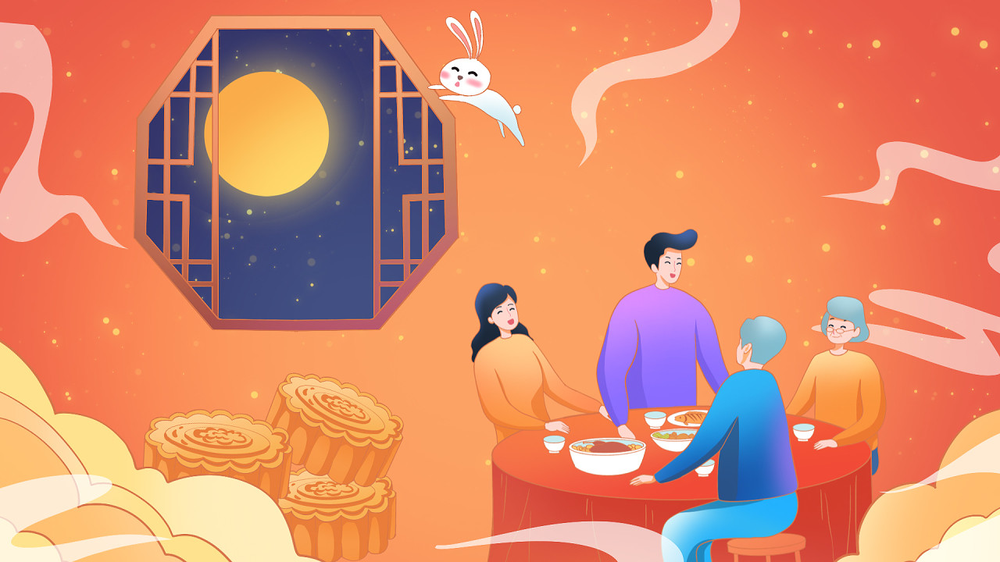
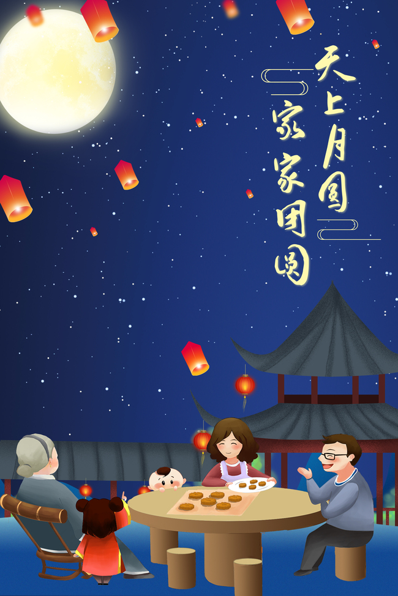
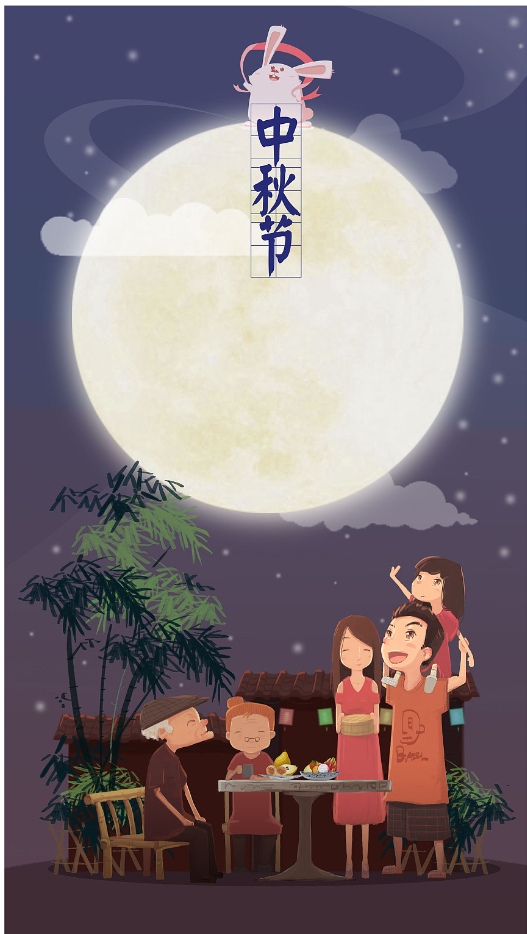

中秋时节话团圆
“海上升明月，天涯共此时”。中秋节起源于上古，普及于汉代，定型于唐朝初年，盛行于两宋之后。早在《周礼》一书中，就有“中秋”一词的记载。 后来贵族官吏和文人学士也相继仿效，逐步传到民间。中秋节有许多别称： 因时间是在八月十五，所以称“八月节”“八月半”；因中秋节的主要活动都是围绕“月亮”进行的， 所以又俗称“月节”“月夕”；中秋节月亮圆满，象征团圆，因而又称“团圆节”，有“花好月圆人团聚”之谓。
“明月关山长相望，天下何处不中秋”。中秋，是一个弥漫团圆的时节。月亮的圆，月饼的圆，以及每个人心中所追求的美好的团圆， 团圆，是中秋永远的主题，也是中国人民文化心理的最终归宿。中秋佳节，共享全家团聚之乐，这便是最大的幸福。中秋最美，美不过一颗深深感恩的心； 中秋最美，美不过最真心的祝福!借宋代大文学家苏东坡的词祝福大家“但愿人长久，千里共婵娟”。
